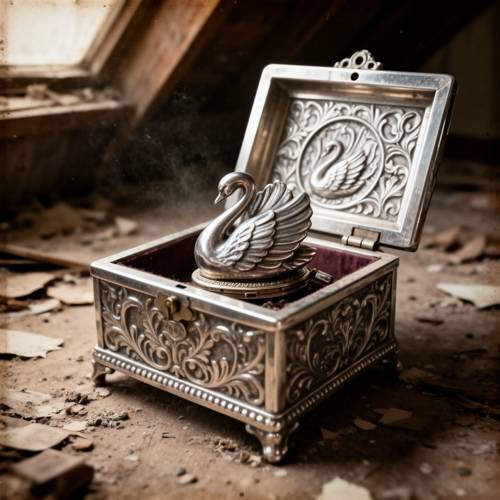
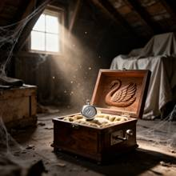

Relationship — In the dust of the abandoned attic, there is a silver locket box in an
In the dust of the abandoned attic, there is a silver locket box in an open music box. The swan embossed on it is exactly the same as the carved pattern on the lid of the music box. Film texture.

Direct — one call, no iterationContinuum — Kimi K3 + FLUX.2-dev
Judge — Direct
FAILRelationship - Inclusion — The image displays an open, ornate silver box that resembles a music box. However, instead of a silver locket box, it contains a silver, three-dimensional swan figurine as its central feature.
FAILCompound - Feature Matching — The image does not contain a locket box. It shows a 3D swan figurine inside the music box and a 2D swan carving on the inside of the music box lid. While both depict swans, they are not 'exactly the same'. The figurine is a detailed, three-dimensional sculpture, whereas the carving on the lid is a two-dimensional relief with a different style and level of detail.
FAILGrammar - Pronoun Reference — The pronoun 'it' refers to the 'silver locket box'. The image does not depict a locket box. It shows a music box with a swan figurine inside it and a swan carving on its lid. Therefore, the condition 'The swan embossed on it [the locket box]' is not met.
PASSStyle — The image has a grainy quality, muted colors, soft focus in the background, and darkened, slightly distressed edges, which effectively creates a vintage 'film texture' as requested.
Judge — Continuum
PASSRelationship - Inclusion — The image shows an open wooden music box. Inside the box, a silver, circular object that resembles a locket is placed on a yellow cushioned lining.
PASSCompound - Feature Matching — The silver locket has an embossed swan on its front. The inside of the music box's lid features a carved wooden pattern of a swan. The two swans are depicted in the same pose, with their necks curved and bodies facing left.
PASSGrammar - Pronoun Reference — The prompt's pronoun 'it' refers to the silver locket box. The image correctly shows that the swan is embossed on 'it'—the silver locket.
PASSStyle — The image has a distinct atmospheric quality with a visible beam of light illuminating dust particles, a soft focus on the background elements, and a slightly desaturated color palette, which gives it a cinematic or 'film texture' appearance.
What the agent did
Thinking
The user wants an image: abandoned attic, dust, silver locket inside an open music box, swan embossed on locket matching carved swan pattern on music box lid, film texture (cinematic/film grain look). Generate with flux2-dev. Cinematic, moody lighting, dusty attic, film grain aesthetic.
Step 1 — `generate_image`
{
"prompt": "Cinematic film still, 35mm film grain texture: inside a dusty abandoned attic, a beam of soft light falls through a small window onto an open antique wooden music box. Resting inside the open music box on faded velvet is a small silver locket, its lid embossed with an elegant swan. The inside of the music box's raised wooden lid bears a carved swan pattern, identical in design to the swan embossed on the silver locket \u2014 both swans clearly visible and matching. Dust motes float in the light beam, cobwebs in the shadowed corners, old crates and sheet-draped furniture blurred in the background. Moody chiaroscuro lighting, muted desaturated color palette with warm amber highlights, shallow depth of field, subtle vignette, analog film photography aesthetic, Kodak film grain.",
"model": "flux2-dev"
}
Result img_0

Thinking
The image looks quite good. Let me inspect the swan on the locket to verify it matches the carved swan on the lid. The carved swan on the lid is clearly visible and detailed. The locket has a swan embossed too — let me zoom in.
Model
The overall composition looks strong. Let me zoom in on the locket to check the swan embossing matches the carved one on the lid.
Step 2 — `inspect_region`
{
"image": "img_0",
"roi": "the silver locket with swan embossing",
"padding": 60
}
Result img_1
Thinking
The locket swan is clear — a swan facing left with curved neck, matching the carved swan on the lid which also faces left. They look quite consistent: both swans face left with similar wing feather pattern. The image fulfills the prompt well: dusty attic, open music box, silver locket inside, matching swans, film texture. This is good. Mark best and stop.
Step 3 — `mark_best`
{
"image": "img_0",
"reason": "All requested elements present and correct: dusty abandoned attic with light beam and dust motes, open wooden music box, silver locket resting inside, swan embossed on locket matching the carved swan on the lid, cinematic film-grain aesthetic."
}
Model
The image is complete. Here's what it captures: - **The attic**: weathered floorboards, cobwebs in the corners, sheet-draped furniture, and a beam of window light cutting through floating dust motes - **The music box**: an open antique wooden box with a wind-up key, its raised lid bearing a deeply carved swan - **The locket**: a silver locket resting on the faded velvet interior, its embossed swan rendered in the same pose and feather pattern as the carving on the lid — the two designs clearly mirror each other - **Film texture**: desaturated warm-amber palette, soft vignette, visible grain, and shallow depth of field giving it the feel of a 35mm film still